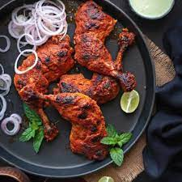

Chicken Biryani is a savory chicken and rice dish that includes layers of chicken, rice, and aromatics that are steamed together The bottom layer of rice absorbs all the chicken juices as it cooks, giving it a tender texture and rich flavor, while the top layer of rice turns out white and fluffy.
few more famous dishes
- Famous dish in India 
Tandoori chicken is a South Asian dish of chicken marinated in yogurt and spices and roasted in a tandoor, a cylindrical clay oven The dish is now popular world-wide. The modern form of the dish was popularized by the Moti Mahal restaurant in New Delhi in the late 1940s.
- Samosa
- Dal Soup
- Curry